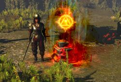

Алва - НІП майстер. Вона надає гравцеві доступ до вторгнень, за якими слідує Храм Ацоатля, як тільки буде завершено достатньо вторгнень. Альва може знаходитись в трьох різних місцях в зоні, де її можна знайти. Поговоріть з нею і завершіть вторгнення в кожному місці. У вторгнені вам порібно за не великий час вбити одного з двух архітекторів і також охронців.